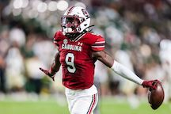
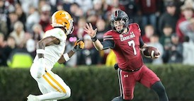

The Greatest Gamecock Football Players of All Time
Introduction to Gamecock Legends
Gamecock football has a rich history filled with legendary players who have made significant contributions to the team's success. From record-breaking quarterbacks to unstoppable defensive linemen, these players have left an indelible mark on the sport and the University of South Carolina.
In this section, we will explore some of the greatest Gamecock football players of all time, highlighting their achievements and their impact on the game.
 | Player Name | Position | Years Active |
|---|---|---|
| George Rogers | Running Back | 1977-1980 |
| Jadeveon Clowney | Defensive End | 2011-2013 |
| Connor Shaw | Quarterback | 2010-2013 |
| Alshon Jeffery | Wide Receiver | 2009-2011 |
| Steve Wadiak | Running Back | 1948-1951 |